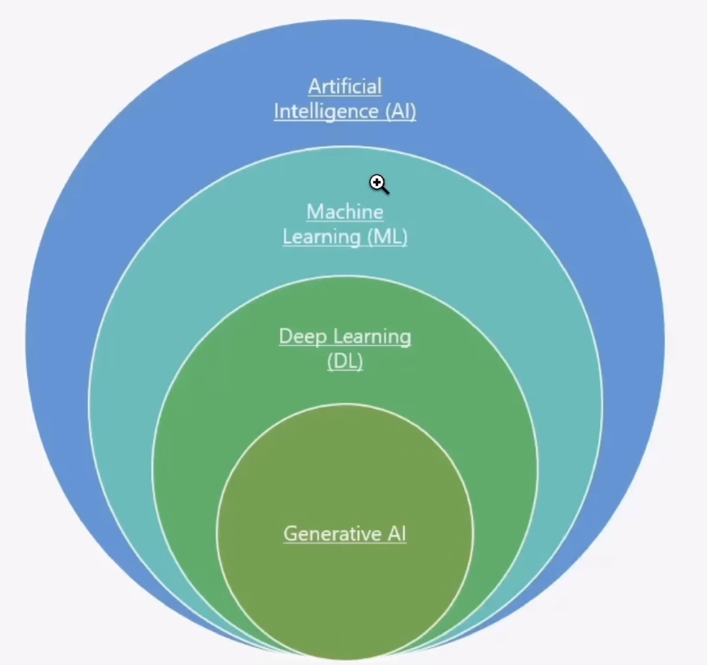

Hierarchy
ของ AI
AI ไม่ได้เก่งขึ้นมาเอง — มันเก่งขึ้นเพราะมี ของใหม่ถูกเพิ่มเข้าไปทีละชั้น หน้านี้ไล่ให้ดูว่าแต่ละชั้นเอาอะไรมาเสริม จน AI วิวัฒนาการมาเป็น Generative AI ทุกวันนี้
4 Part · ไล่ดูทีละขั้น ↓
มันซ้อนกันอยู่ 4 ชั้น
ชั้นที่อยู่ในสุดไม่ได้มาแทนที่ชั้นนอก แต่ คือชั้นนอกที่ถูกเติมของเข้าไป — Generative AI ก็คือ Deep Learning ที่ถูกต่อยอด, Deep Learning ก็คือ Machine Learning ที่ถูกต่อยอด
- 01Artificial Intelligenceทำตามกฎที่คนเขียนไว้ให้
- 02Machine Learning+ เรียนรู้จากข้อมูลใหม่เองได้
- 03Deep Learning+ Neural Network ที่หาลักษณะเอง
- 04Generative AI+ Generator Model ที่สร้างของใหม่ได้

Artificial Intelligence
ทำตาม กฎที่คนเขียนไว้ให้ — เจอเงื่อนไขนี้ ก็ทำแบบนี้ ไม่มีกฎ ก็ทำไม่เป็น
คือ Automatic System ที่ จัดการงานแทนมนุษย์ได้ โดยทำงานอยู่ภายใต้ตรรกะแบบ Rule-Based (กฎที่เขียนตายตัวไว้ล่วงหน้า)
“ถ้า AI ทำงานภายใต้ Rule นี้ ก็จะได้ Action แบบนี้”
กฎถูกเขียนไว้ตายตัว พอข้อมูลใหม่เข้ามา คนต้องมานั่งแก้กฎเองทุกครั้ง
Machine Learning
กฎชุดเดิม แต่ เรียนรู้จากข้อมูลใหม่แล้วปรับตัวเองได้ โดยไม่ต้องรอคนมาแก้
- Origin — มันโตมาจากไหน
-
ปกติเวลาสร้าง Rule-Based แต่ละอัน ตัว Data ที่ป้อนเข้าไปจะถูกแบ่งออกเป็นชุด ๆ
ด้วย สมการ / method ต่าง ๆ เช่น Classification, Clustering, Outlier Detection
แต่ละ Rule-Based จะมี Policy Fix คุมไว้ เพื่อให้ข้อมูลใหม่ที่ไหลเข้ามา ไม่ทำให้สิ่งที่ทำไปแล้วถูกเปลี่ยนแปลง — เช่น Classification ข้อมูลใหม่ก็ลงใต้เส้นที่กำหนดไว้แล้วเหมือนเดิม, Clustering มี 2 วง ข้อมูลใหม่เข้ามาก็ไม่ทำให้จำนวนวงเพิ่มขึ้น - Purpose — มีไว้ทำไม
- “เวลามี Update ข้อมูลใหม่ ตัว Rule-Based ที่มีอยู่ สามารถอัพเดทตัวเองได้ผ่านการเรียนรู้ใหม่ แล้วพัฒนาต่อยอดเป็นสมการ/method รูปแบบใหม่ได้ตลอดเวลา”
การแบ่งกลุ่มพวกนี้ยังต้องให้ มนุษย์เป็นคนบอก ว่าแต่ละกลุ่มคืออะไร (Label) — แต่บางทีมนุษย์เองก็บอกไม่ได้
Deep Learning
ถ้า คนบอกไม่ได้ ว่าข้อมูลกลุ่มนั้นมีลักษณะอะไร — ก็ ให้เครื่องหาเอง
ML มี Component หนึ่งที่สำคัญมาก ๆ คือ “การสอนของมนุษย์” ซึ่งมีอยู่ 2 แบบ
- Supervised Learning
- มนุษย์ Label ไว้แล้วว่าแต่ละ Group ที่แบ่งไว้คืออะไร โดยชัดเจน → รู้ว่าเป็น Pattern ไหน, ระบุได้ว่ามี Feature อะไรบ้าง
- Unsupervised Learning ← ตรงนี้คือปัญหา
- จัดกลุ่มไว้เฉย ๆ แต่ยังไม่ได้ Label — เพราะ มนุษย์ไม่สามารถระบุให้กับข้อมูล Group นั้นได้ว่ามี Feature อะไรบ้าง ? มี Pattern อะไรบ้าง ?
- Solution → Neural Network
- ทำ Setting เพิ่ม โดยสร้างสิ่งที่เรียกว่า Neural Network เพื่อให้มันกำหนด Feature และ Pattern ออกมาได้เอง แล้วเอา Outcome ไปทำ Backpropagation เทียบกับของเดิม จากนั้นอัพเดทตัวแปร Weight เพื่อเพิ่มความแม่น
ตอนนี้มันเก่งเรื่อง “ตัดสินของที่มีอยู่” แล้ว — แต่ยัง สร้างของใหม่ขึ้นมาเองไม่ได้
Neural Network
ทำงานยังไงกันแน่
มันจะ แปลงข้อมูลแต่ละขั้นให้เป็น “เลขความน่าจะเป็น” แล้วจับทั้งหมดมาคูณกัน แล้ว predict ว่าผลลัพธ์ใกล้เคียงกับ Outcome รูปแบบไหน
Input → Calculation → Output (Prediction)
Feature = Event นั่นแหละ
ถ้ามีลำดับ A B C D E แต่ละ “เหตุการณ์ที่สังเกตได้” ก็นับเป็นหนึ่ง Feature:
Feature 1 : B อยู่หน้า A → Prob = x
Feature 2 : C อยู่หน้า B → Prob = y
Feature 3 : C อยู่หน้า B และ A → Prob = z
สลับลำดับเป็น C A D B E เมื่อไหร่ → #Feature ก็จะเพิ่มขึ้นอีก
แล้วมันเก่งขึ้นได้ยังไง
พอได้ Outcome สุดท้ายออกมา เอามาทำ Backpropagation เพื่อเทียบกับ Outcome จาก Group เดิม
จากนั้นอัพเดทผ่านตัวแปร Weight เพื่อเพิ่ม Accuracy ให้มากขึ้น
predict → compare → adjust weight → repeat
Generative AI
สร้างของขึ้นมาใหม่ได้ ไม่ใช่แค่ตัดสินของที่มีอยู่
Generative = การที่มนุษย์เรา [ใช้ / สั่ง] ให้สิ่ง ๆ นึงมันสร้าง Outcome ขึ้นมา โดยที่ ไม่ใช่ฝีมือเรา
- ตัวจริงที่ใช้งาน
- Model ที่พัฒนามาจาก DL เราจะเรียกว่า Discriminator Model ซึ่งเป็น Model on production จริง
- ตัวที่เพิ่มเข้ามา
- เพิ่มอีก 1 Model เพื่อ ลับคม ตัว Discriminator ให้เฉียบคมขึ้น — เรียกว่า Generator Model
ดูวิธีที่ Generator ลับคม Discriminator → แล้วต่อยอดเป็น LLM ที่เราคุยกันทุกวันนี้
Generator ลับคม
Discriminator
Discriminator คือ Model ตัวจริงที่ขึ้น production — Generator ไม่ได้มีไว้ใช้งาน แต่มีไว้ ผลิตของปลอมมาหลอก เพื่อให้ตัวจริงแยกแยะเก่งขึ้น
สร้างของปลอม
Random Input Vector → Generator Model → ได้ Generated Fake Example ออกมา
ยัดให้ตัวจริงตัดสิน
เอา Fake Example มายัดเข้า Discriminator Model เพื่อให้มัน บอกว่าจริงหรือเท็จ
เกลาให้คมขึ้น
ถ้ามีความแตกต่างอะไรเกิดขึ้น ก็ทำเป็น Binary Classification แยกไว้ช่วยเกลาตัว Discriminator
LLM คืออะไรกันแน่
LLM คือ Generative AI ชนิดหนึ่ง — Model ที่นำข้อมูลมาคำนวณในรูปแบบ “ความน่าจะเป็น” แล้วนำมาเทียบกับ “ความสัมพันธ์” ที่มี แล้ว Outcome ออกมาเป็นคำตอบในรูปแบบของ Prediction
Transformer
Neural Network ประเภทที่ LLM ใช้ — นำข้อมูลมา เทียบความสัมพันธ์ แล้วสร้างเป็นข้อมูลชุดใหม่ออกมา
Encoder / Decoder
Encoder = ตัวแปลงข้อมูลจาก text → vector
Decoder = ตัวแปลงข้อมูลจาก vector → กลับมาเป็น text
Parameter ขนาดใหญ่
ตัว L ใน LLM คือ #Feature ที่มากมายมหาศาล — หลักการเดียวกับ Neural Network ข้างบน แค่ใหญ่กว่ามหาศาล
LLM = Model ที่ใช้ Neural Network ประเภท Transformer ในการคำนวณ โดยใช้ Parameter ที่มีขนาดใหญ่ (#Feature ที่มากมายมหาศาล) มาคำนวณ แล้ว Outcome ออกมาในรูปแบบ Prediction
จาก Pretrain
สู่ Model ที่ใช้งานจริง
Model ตัวเดียวกันเดินผ่านสี่ด่านนี้ กว่าจะกลายเป็นตัวที่เราคุยด้วยทุกวัน
Pretrain Model
Model ที่ผ่านการ Trained มาแล้วเรียบร้อย แต่ข้อมูลที่ผ่านการ Trained พวกนี้มาจากการดำเนินการผ่าน “ความสัมพันธ์ภายในข้อมูล” เท่านั้น หรือที่เรียกว่า Unsupervised Learning ตัวเดียวกับใน Part 03
→ สรุปง่าย ๆ Pretrained คือ เด็กเนิร์ดที่รู้มาก แต่ไม่ได้ specialist ในด้านใด ๆ
Supervised Learning → Instruct Model
Supervised Learning ตัวเดียวกับใน Part 03 — Model ที่ผ่านการ Fine-Tuning เพื่อให้ Model สามารถทำงานเฉพาะทาง (Specialist) ได้อย่างมั่นใจและแม่นยำ — ซึ่ง Model กลุ่มนี้จะเรียกว่า Instruct Model
Reinforcement Learning
มนุษย์สอน Model ที่ on production แล้วว่า “แบบนี้ไม่ถูกนะ ต้องตอบแบบนี้ ๆ” — ซึ่งสิ่งที่เราบอกมัน Model จะนับ Feedback พวกนี้เป็น Reward สำหรับ Model มัน
→ โดยผ่านการ input บน Frontend ของ Model เช่น Chat, API Response รูปแบบต่าง ๆ เพื่อให้ Model เฉียบคมมากขึ้น
In-Context Learning
คือการทำ “Data Preparation” ให้กับ LLM ให้ดีและมากที่สุด เพื่อให้เราได้ Outcome ที่ดีที่สุดเช่นกัน
→ ด่านนี้อยู่ฝั่งเรา ไม่ใช่ฝั่ง Model — เป็นด่านเดียวที่ทำได้โดยไม่ต้องเทรนอะไรใหม่
Human ──คำสั่ง──▶ Model (LLM) ──────▶ Outcome ที่ AI สร้างขึ้นมาให้
└─▶ Neural Network : Input → Calculation → Output